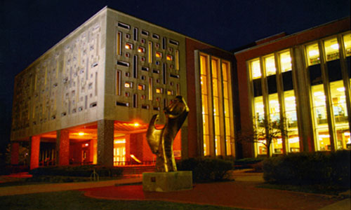

- Laptops may be checked out at the circulation desk by OWU students, faculty, or staff members
- The checkout period is 4 hours with no renewals
- Laptops can be used inside the library only
- You must leave your OWU ID card (or driver's license) at the desk until the the laptop is returned.
L.A. Beeghly Library

The L.A. Beeghly Library is the largest of the three libraries in the Ohio Wesleyan University Library system. The library houses an Information Commons, the Beeghly Café, the Media Center, the Archives of Ohio United Methodism, a Rare Books, Manuscripts, and Artifacts collection, the OWU Historical Collection, and the majority of the libraries' nearly 550,000 volumes. Beeghly Library is also home to one of the country's oldest government documents depositories.
What's in the Library?
- Great study areas
- Course reserves
- Laptops
- Government documents
- Archives of Ohio United Methodism
- Rare books and artifacts
Borrow a Laptop
Places to Start
- Talk to a librarian
- Summon
- CONSORT
- Academic Search Complete
Get Help With...
- Your Research
- Formatting citations
- Borrowing, renewing, and requesting
HOURS
| Mon - Thur | 8am - 2am |
| Fri | 8am - 5pm |
| Sat | 10am - 5pm |
| Sun | 1pm - 2am |
CONTACT
 740-368-3242
740-368-3242
Chat requires JavaScript
 Chat online now
Chat online now
 Chat is offline
Chat is offline
 Twitter
Twitter Facebook
Facebook Flickr
Flickr